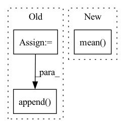

Pattern ID :964
Before Change
if not self.include_top:
return features
x = self.avgpool(x) // 1x1
features.append( x)
x = x.view(x.size(0), -1)
x = self.fc(x)
return xAfter Change
features = self._forward(images)
features = [f.chunk(2) for f in features]
// diffs = [a * torch.abs(p[0] - p[1]).sum() for a, p in zip(self.alphas, features)]
diffs = [a * torch.abs(p[0] - p[1]).mean() for a, p in zip(self.alphas, features)]
// diffs = [a*torch.abs(self.norm_tensor(tf) - self.norm_tensor(rf)) for a, tf, rf in zip(self.alphas, true_features, rec_features)]
// diffs = [a * torch.mean(torch.abs(tf - rf)) for a, tf, rf in zip(self.alphas, features)]
In pattern: SUPERPATTERN
Frequency: 3
Non-data size: 3
Instances Fragment ID: 2974765
Project Name: casualganpapers/make-a-scene
Commit Name: 89ba77e885ac1c12ac2d5df5a6b3da842e30bfe0
Time: 2022-05-26
Author: 61938694+dome272@users.noreply.github.com
File Name: losses/face_loss.py
M Class Name: ResNet
N Class Name: ResNet
M Method Name: forward(3)
N Method Name: forward(2)
M Parent Class: nn.Module
N Parent Class: nn.Module
M File Name: losses/face_loss.py
N File Name: losses/face_loss.py
M Start Line: 127
M End Line: 151
N Start Line: 163
N End Line: 177
Before Change
// summedProb = batchWiseLogit.sum(1)
posterior = OneHotCategorical(logits=batchWiseLogit)
prior = OneHotCategorical(probs=torch.ones_like(batchWiseLogit) / batchWiseLogit.shape[-1])
reg = torch.distributions.kl_divergence(posterior, prior).sum(-1)
reg += compute_penalties(batchWiseLogit, allowed_entropy=0.1, individual_entropy_coeff=1.0, allowed_js=4.0, js_coeff=1.0, cv_coeff=1.0, eps=Consts.Eps)
// reg = reg / diversity
regs.append( reg)
regs = sum(regs)
return ssimLoss, l1Loss + l2Loss, l1QLoss + l2QLoss, regs // + 10 * stdReg
After Change
l2QLoss.append(F.mse_loss(latent.detach(), q, reduction="none").mean(axis=(1, 2, 3)))
l1QLoss.append(F.l1_loss(latent.detach(), q, reduction="none").mean(axis=(1, 2, 3)))
l2QLoss.append(0.25 * F.mse_loss(latent, q.detach(), reduction="none").mean(axis=(1, 2, 3)))
l1QLoss.append(0.25 * F.l1_loss(latent, q.detach(), reduction="none").mean(axis=(1, 2, 3)) )
regs.append(-1e-4 * ((latent ** 2).mean((1, 2, 3)) + (q ** 2).mean((1, 2, 3))))
l1QLoss = sum(l1QLoss) Fragment ID: 2974761
Project Name: xiaosu-zhu/mcquic
Commit Name: a370b9c74a1cd895f3903d8b1d8eec0c84d1920e
Time: 2021-03-28
Author: xiaosu.zhu@outlook.com
File Name: src/mcqc/losses/structural.py
M Class Name: CompressionLossTwoStage
N Class Name: CompressionLossTwoStage
M Method Name: forward(6)
N Method Name: forward(6)
M Parent Class: nn.Module
N Parent Class: nn.Module
M File Name: src/mcqc/losses/structural.py
N File Name: src/mcqc/losses/structural.py
M Start Line: 146
M End Line: 173
N Start Line: 135
N End Line: 171
Before Change
// oneHot = F.one_hot(code, num_classes=logit.shape[-1]).float()
// [n, h, w]
// targetWeight = (weight * oneHot).sum(-1)
code = torch.randint(logit.shape[-1], [n, h, w], device=device)
logit = logit.permute(0, 3, 1, 2)
mle = F.cross_entropy(logit, code)
// regs.append(mle)
regs.append( reg + 0.01 * mle)
regs = sum(regs) / len(logits)
// regs = 0.0
return ssimLoss, l1Loss + l2Loss, regs
After Change
// logit = logit.mean(dim=(1, 2))
posterior = Categorical(logits=logit)
// [N, H, W]
reg = posterior.entropy().mean()
// prior = Categorical(logits=torch.zeros_like(logit))
// reg = torch.distributions.kl_divergence(posterior, prior).mean()
// // [n, h, w, k]
// // weight = (-logit).detach().softmax(-1) Fragment ID: 2974760
Project Name: xiaosu-zhu/mcquic
Commit Name: 57e88ad60fddbcfe778834fbd8a0ffc816fca34c
Time: 2021-09-10
Author: xiaosu.zhu@outlook.com
File Name: src/mcqc/losses/quantization.py
M Class Name: CompressionLoss
N Class Name: CompressionLoss
M Method Name: forward(8)
N Method Name: forward(8)
M Parent Class: nn.Module
N Parent Class: nn.Module
M File Name: src/mcqc/losses/quantization.py
N File Name: src/mcqc/losses/quantization.py
M Start Line: 48
M End Line: 125
N Start Line: 49
N End Line: 114